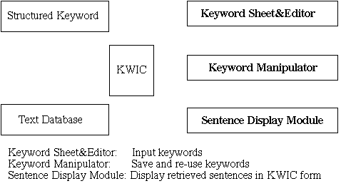

(36) A Sentence Retrieval Tool: KWIC(on CESP)
Machine: SPARC
Environment: UNIX, Motif/Nemacs
Language: CESP
Source Code: 4 MB (including Text DB)
Documents: Manual (Japanese)
Overview
A tool for retrieving sentences satisfying a grammatical keyword
Configuration

Function
Not only a surface word for retrieval keyword but also a pattern
containing grammatical information such as "(+human) ga (+loc)
de 〜 suru" is allowed as a structured keyword. KWIC can
collect various language phenomena, and is a useful tool for
developing dictionaries and grammars for NLP systems.
- Structured keyword (Surface, Category, Inflection, Semantic
feature, etc.)
- Japanese Text database (16 texts, 4500 sentences)
- Keyword management, Re-search, Sampling search, Set operation
- Sorting display, Centering display, Detailed display
Notes
Complete version runs on X-window(Motif) system, while there is a
simplified version running on Emacs.
FTP
- A Sentence Retrieval Tool: KWIC(on CESP) [1,279K]

www-admin@icot.or.jp